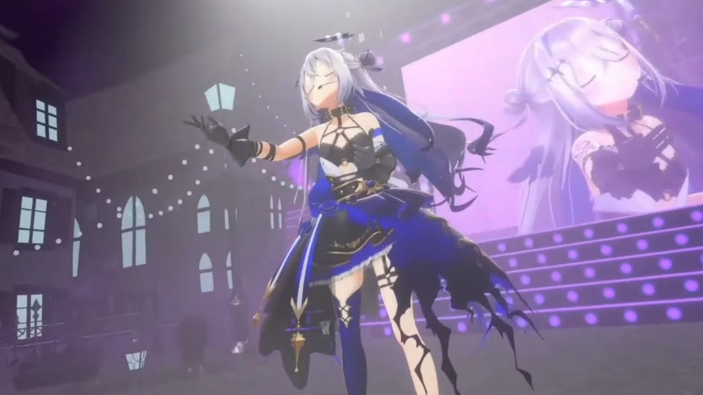
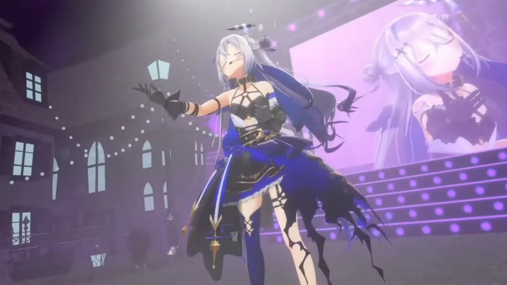

Amane Kanata
Who is Kanata?
Amane Kanata is an angel vtuber for the 4th Generation of the Hololive idol talents. She is claimed to be a student at a great angel academy. But has taken up residence in Hololive's 4th gen to acheive her dream of becoming a great idol. She is famous for her 50kg grip that many in her gen are afraid of. And she is not afraid to use it. But overall, she is kind, sweet, and has great sense of humor. But she is especially very calm under pressure. As she gives a calming aura to those that watch her streams and to her genmates.
 
